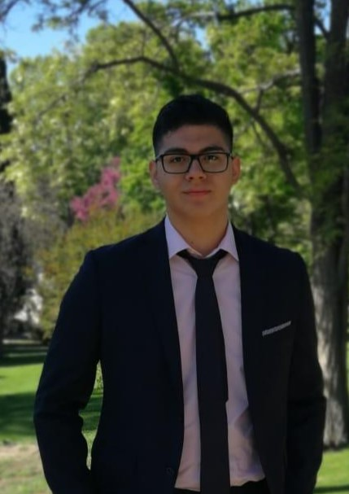
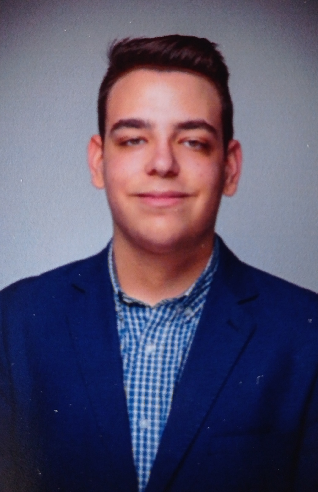

Bienvenidos a The WildGuard
Hola, somos una asociación que se dedica a la protección y el bienestar animal. Nuestro principal objetivo a rasgos generales es trabajar para la conservación y protección de especies amenazadas. Esto implica esfuerzos en la investigación, educación, sensibilización, rehabilitación y reintroducción de animales en su hábitat natural.

Funciones principales de The WildGuard
- Investigación y monitoreo: Esta asociación realiza estudios y monitoreos de las poblaciones de animales en peligro de extinción para comprender su situación actual, las amenazas que enfrentan y las medidas de conservación necesarias.
- Conservación de hábitats: Trabajamos para conservar y proteger los hábitats naturales de los animales en peligro de extinción, ya sea mediante la adquisición y administración de áreas protegidas, la promoción de prácticas de manejo sostenible de los recursos naturales o la restauración de hábitats degradados.
- Educación y concienciación: Intentamos educar al público para aumentar la conciencia sobre la importancia de la conservación de los animales en peligro de extinción. Esto generalmente lo realizamos a través de campañas de sensibilización, eventos educativos, talleres y material informativo.
En resumen, nuestra asociación de animales en peligro de extinción desempeña varias funciones con el objetivo de preservar y garantizar la supervivencia de estas especies amenazadas. Para ello nos gustaría pedirte tu ayuda para que entre todos logremos conseguirlo.¿Te gustaría unirte?
Fundadores de The WildGuard
Directora general y fundadora
Daniela Ambuludi
Daniela es una dedicada y apasionada veterinaria que siempre tuvo una gran conexión con los animales, en especial con su conejo. Desde muy joven, decidida a hacer una diferencia en el mundo animal, estudió con dedicación y logró obtener su título de médico veterinaria en la universidad de cambridge.
Después de trabajar en diferentes clínicas y hospitales veterinarios durante varios años, Daniela comenzó a notar un gran aumento en el número de casos de animales en peligro de extinción que llegaban a su consulta. Esto despertó en ella una gran preocupación y las ganas de marcar una diferencia más significativa en la conservación de estas especies.
Por ello decidió viajar por el mundo intentando reclutar gente para su proyecto The WildGuard, en una conferencia de Galicia donde pudo conocer a muchos veterinarios y farmacéuticos que compartían su amor por los animales.
Daniela y su equipo estaban comprometidos en brindar la mejor atención médica posible a los animales, rehabilitándolos y preparándolos para su regreso a la vida silvestre.
El proyecto fue todo un éxito y gracias a la atención y cuidado que recibieron, muchos animales en peligro de extinción lograron recuperarse y ser reincorporados exitosamente en su entorno natural.
Subdirector de Atención a la Fauna
Jair Cedeño
Profesional farmacéutico veterinario altamente cualificado.Desde joven había sentido una gran curiosidad por los medicamentos y su impacto en la salud de las personas. Fascinado por el mundo de la farmacéutico, decidió que su futuro estaría en el estudio de esta carrera.
Jair se dedicó con pasión y dedicación a sus estudios en la Universidad de Santiago de Compostela, donde se formó como farmacéutico veterinaro.
Con el tiempo, Jair se convirtió en un referente. Fue invitado a conferencias y charlas en diferentes eventos y congresos de la región, donde compartía su experiencia y conocimientos con otros profesionales de la salud.
En una de esas conferencias conoció a una veterinaria llamada Daniela Ambuludi la cual lo invitó formar parte de una nueva asociación para proteger a los animales en peligro de extinción y decidió unirse, en la asociación se dedica a la protección y conservación de especies en peligro de extinción en su hábitats.
Subdirector de cultura ciudadana, gestión del conocimiento y tesorero
Alejandro Franco
Profesional altamente cualificado para las finanzas, gracias a el se han podido llevar a cabo todos los proyectos de la asociación.
Alejandro siempre había tenido un gran interés por los negocios y la administración. Desde muy pequeño, planificaba distintas estrategias de venta simulando ser un empresario exitoso.
Empezando por la compra-venta de figuras de anime.A medida que fue creciendo, Alejandro supo que su pasión era estudiar Administración y Dirección de Empresas (ADE). Se esforzó mucho durante su educación en grado superior de Administración y Finanzas para obtener las mejores calificaciones y, finalmente, logró ingresar a una prestigiosa universidad de Madrid donde cursaría la carrera de ADE.
Una vez graduado se mudó a Galicia donde conoció a su socio Jair Cedeño el cual le propusó unirse a la asociación The WildGuard para ayudar a los animales en peligro de extinción.
Tras unirse a la causa gracias a su formación en ADE, Alejandro pudo aplicar adecuadamente los principios de administración y gestión, tomando decisiones financieras inteligentes y estableciendo estrategias de marketing efectivas para catapultar la fama de la asociación y ayudarla a prosperar.